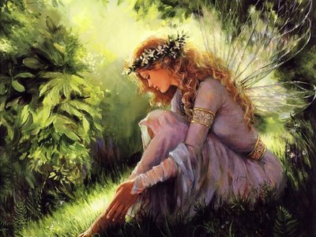

Na biblioteca, achei uma carta em um livro antigo, mencionando um portal secreto para o reino das fadas. A carta indicava que o portal se revelaria apenas durante a lua cheia, com uma flor das duas mais raras como chave. Com essas pistas resolvi seguir e procurar o portal secreto
Você começa sua jornada a procura da Flor Jade Vine
Você começa sua jornada a procura da Flor Gibraltar Campion
Encontramos a flor, podemos esperar a lua cheia
Encontramos o portal secreto